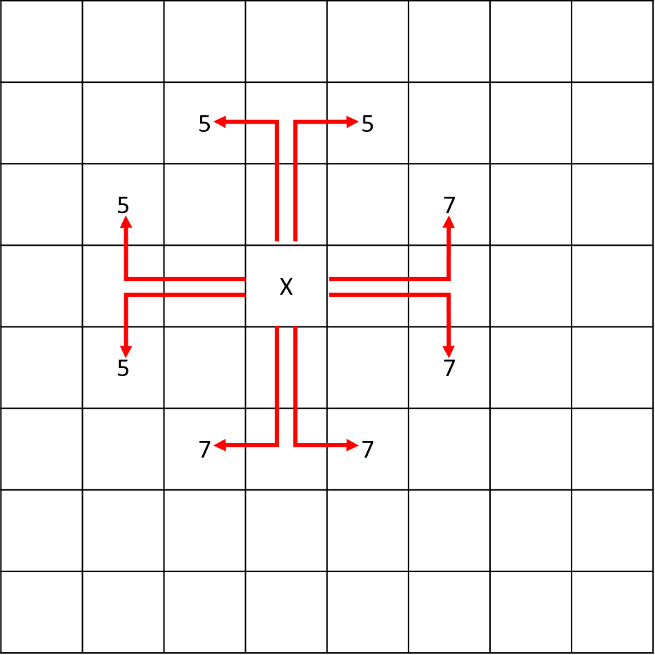
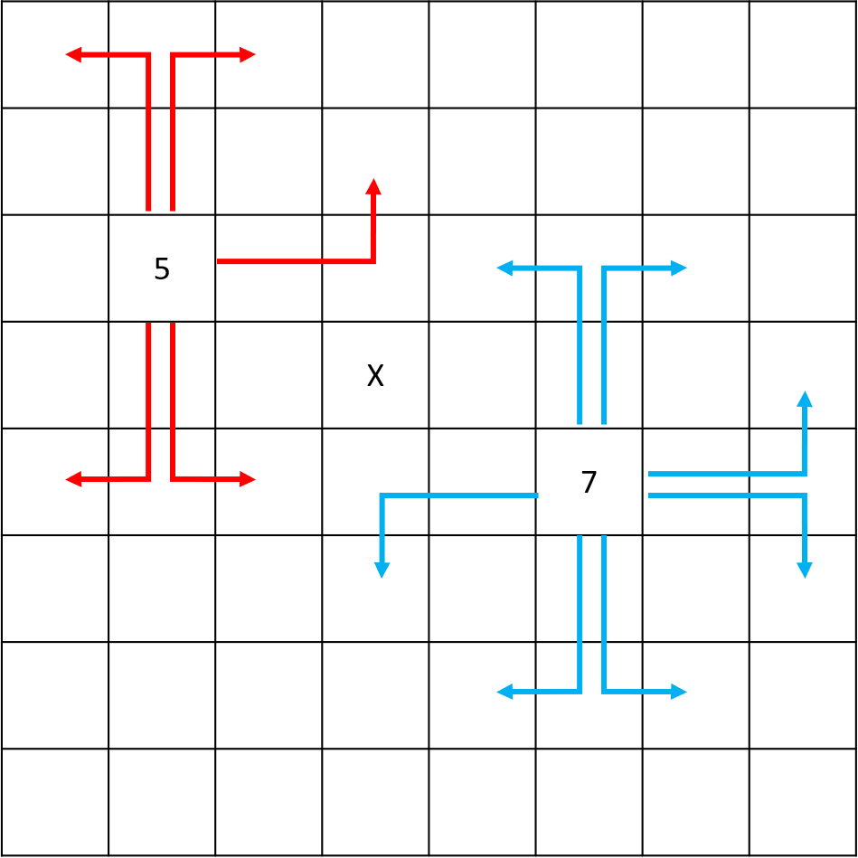

Now that we know where our knight can move, we should have a strategy on how our knight should move. As you saw previously, there are often many routes available. We could check every combination of routes possible, but this is hard to do by ourselves. In a computer program, we could use brute force to check every possible route combination until we find a solution. This is inefficient and could take a while even for a computer to do. How can we determine which route gives us the best chance of finishing the puzzle? We can use Warnsdorff's algorithm to help us.
Warnsdorff's algorithm is a strategy for us to choose the best move based off the knight's position and the board's status. To apply it:
Here is an example of the algorithm:
From the starting position, there are 8 possible moves. The number of next possible moves from each landing spot is marked. Here is an example showing how the number of next possible moves is determined. Note that the highest number is 7 since you cannot revisit the square you moved from, and the lowest number is 0 which indicates a dead-end.
In this stage, you should alter your program to do the following:
The example below shows how your program should work.
The greater-than symbol followed by space (> ) represents the user input. Notice that
it's not the part of the input.
Example 1:
Enter your board's dimensions: > 6 5
Enter knight's starting position: > 4 2
Here are the possible moves:
---------------
5| _ _ _ _ _ _ |
4| _ _ 5 _ 2 _ |
3| _ 5 _ _ _ 3 |
2| _ _ _ X _ _ |
1| _ 2 _ _ _ 1 |
---------------
1 2 3 4 5 6Example 2:
Enter your board's dimensions: > 3 4
Enter knight's starting position: > 2 2
Here are the possible moves:
---------
4| 1 _ 1 |
3| _ _ _ |
2| _ X _ |
1| _ _ _ |
---------
1 2 3Example 3:
Enter your board's dimensions: > 1 2
Enter knight's starting position: > 1 2
Here are the possible moves:
-----
2| X |
1| _ |
-----
1